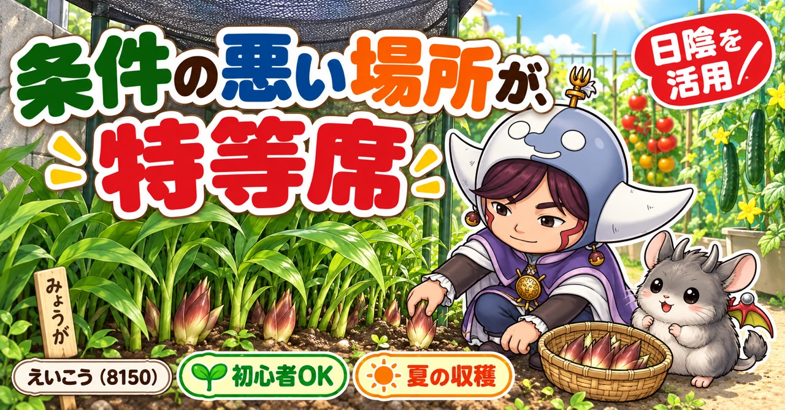
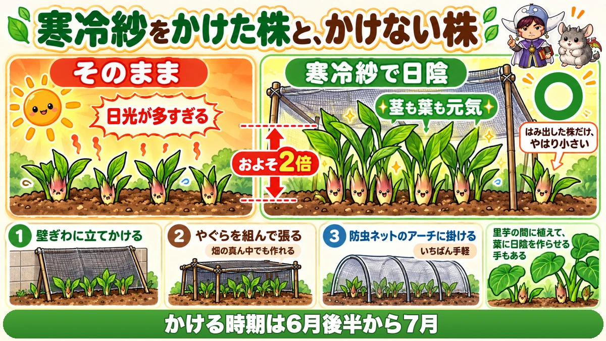
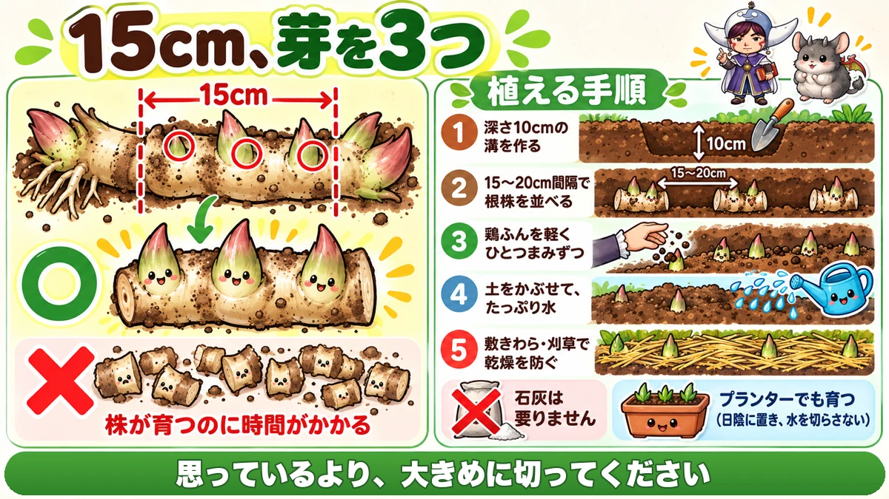
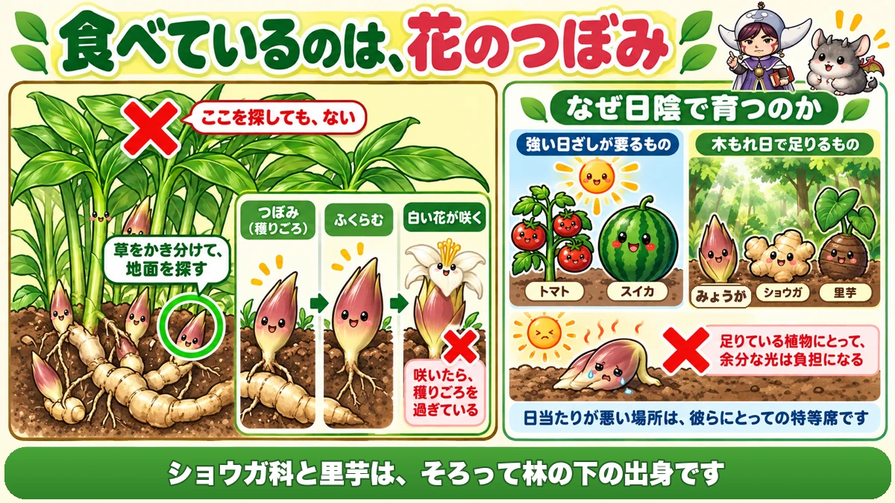

みょうがは、日陰で倍に育ちます🌿 一度植えれば何年も穫れます

🌿「北側の細長い場所が、ずっと空いたまま」
🌿「植えたけど、細くて小さいものしか穫れない」
🌿「どこから出てくるのか分からず、探してしまう」
どうも、8150（えいこう）です🌱 家庭菜園歴8年、理科の教員免許を持っていて、有機・無農薬で野菜を育てています。
前回は春菊でした。今日はみょうがです。
前々回のしょうがで「日陰でいい」という話をしました。今日はその上をいきます。
先に、この記事でいちばん言いたいことを言っておきますね。
みょうがは、日陰を作るほど大きくなります。
寒冷紗で日陰を作った株と、作らなかった株。大きさが倍ほど違いました🌿
まず、みょうがの基本データ
3つだけ押さえてください
- 科：ショウガ科（しょうがの仲間。多年草です）
- 植え付け：2〜3月
- 収穫：夏から秋（7〜9月ごろ）
※時期は中間地（関東〜関西の平野部）が目安。寒い地域は少し遅らせ、暖かい地域は早めに。
一度植えれば、何年も穫れます
ここが最大の魅力です。
みょうがは多年草です。毎年植え直す必要がありません。
同じ場所で数年、そのまま穫れ続けます。
ただし、3年で入れ替えます
とはいえ、放置でいいわけではありません。
植えっぱなしにすると、だんだん収量が落ちます。
3年に1度を目安に、植え替えてください。掘り上げて、切り分けて、また植えます。
虫も、ほとんど来ません
しょうがと同じで、病害虫がほとんどありません。
無農薬でいちばん楽な野菜のひとつです。
日陰を作ると、倍になります

比べた結果
これは実際に比べた話です。
同じ時期に出てきた芽を、片方には寒冷紗で日陰を作り、片方はそのままにする。
結果は、日陰のほうが倍ほどの大きさになりました。茎も葉も、明らかに元気です。
はみ出した株は、小さい
面白いのはここです。
寒冷紗からはみ出していた株だけ、やはり小さかったそうです。
同じうねの、すぐ隣なのに、です。
日光の量が、そのまま大きさに出ています。
かける時期
6月後半から7月にかけてが勝負です。
日ざしがいちばん強くなり、みょうがが太っていく時期と重なります。
日陰の作り方、3つ
やり方は、場所に合わせて選んでください。
- 壁ぎわなら … 寒冷紗を立てかけるだけ
- 畑の真ん中なら … きゅうりネットのようにやぐらを組んで、寒冷紗を張る
- 簡単に済ませたいなら … 防虫ネットのアーチに、寒冷紗か黒い防虫ネットをかける
3つ目がいちばん手軽です。うねにアーチを立てて、上から掛けるだけです。
里芋に、作らせる方法も
しょうがの記事でも書いた方法です。
里芋の間に植えると、里芋の大きな葉が日陰を作ってくれます。
資材を買わずに済みます。しかも、どちらも湿り気を好むので相性がいいです。
植え方は、切り分けが肝心

時期は、2〜3月
新芽が動き出す前に植えます。
種みょうがは、2月から4月ごろにホームセンターに並びます。
15cm、芽を3つ
すでに育てている株を植え替える場合は、まず掘り上げます。
冬は地上部が枯れているので、スコップで根株を掘り起こしてください。
そして切り分けます。条件は2つです。
- 長さ15cm程度に切る
- 芽が3つほど残るようにする
細かく切りすぎないこと
ここが失敗しやすいところです。
「数を増やしたい」と思って小さく刻んでしまう。
そうすると、株が育つまでに時間がかかります。
15cmは、けっこう長いです。思っているより大きめに切ってください。
植える手順
- 深さ10cmの植え溝を作る
- 15〜20cm間隔で、根株を並べる
- 元肥に鶏ふんを、軽くひとつまみずつ
- 土をかぶせて、たっぷり水をやる
- 敷きわらや刈草をかけて、乾燥を防ぐ
石灰は、要りません
これは覚えておくと楽です。
みょうがに石灰は不要です。
酸性に弱い春菊とは正反対ですね。準備がひとつ減ります。
プランターでも育ちます
畑がない方へ。
みょうがはプランターでも育ちます。
条件は2つだけです。日陰に置くことと、水を切らさないこと。
ベランダの北側という、たいてい持てあましている場所が使えます。
夏のお世話は、少ないです
追肥は、1回だけ
これは助かる話です。
みょうがの追肥は、最初で最後の1回です。
6月ごろまでに済ませてください。
やり方
- 窒素は少なめでよい（リン酸・カリの多い鶏ふんなど）
- 株の周りに、上からパラパラでよい
- 量は10cc程度、一握りくらい
穴を掘って埋める必要もありません。みょうがはこれで足ります。
水は、たっぷり
一方で、水はけちらないでください。
「やりすぎかな」というくらいで大丈夫です。
うね間に流し込むのがいちばん楽です。うね間がいつも湿っているくらいを目安にしてください。
株元の草は、抜かなくていい
これも楽な話です。
株元の雑草は、そのままで構いません。
地面が覆われて、地温が上がらないからです。
刈った草や乾かした残渣を株元に敷くのも、同じ効果があります。
混んできたら、切る
数年たつと、株がぎっしりになります。
8cmくらいの間隔になるように、ハサミで間引いてください。
風が通ると、状態がよくなります。
学ぶ：食べているのは、つぼみです🔬

あれは、花です
みょうがを食べるとき、何を食べているか考えたことはありますか。
あれは、花のつぼみです。
開く前の花を食べている、ということですね。
だから、地面を探します
そして、ここが実用に直結します。
みょうがのつぼみは、地下茎から直接、地際に出てきます。
葉の上のほうを探しても、ありません。
株元の地面を、そっと草をかき分けて探してください。
開くと、遅い
つぼみですから、放っておくと咲きます。
花が咲いてしまうと、食感が落ちます。
白い花が見えたら、それはもう穫りごろを過ぎた合図です。夏は数日おきに見にいってください。
なぜ日陰で育つのか
さて、記事の前半の話に戻ります。
なぜ日陰のほうが大きくなるのでしょう。
もともと、林の下の植物です
植物には、大きく2つのタイプがあります。
- 強い日ざしがないと育たないもの（トマト・スイカなど）
- 木もれ日くらいで足りるもの（みょうがなど）
みょうがは後者です。もともと林の下で暮らしてきた植物なんですね。
足りるから、余ると負担になる
木もれ日で足りる植物にとって、真夏の直射日光は「多すぎる光」です。
葉が焼け、水が奪われ、かえって弱ります。
寒冷紗をかけると倍になるのは、余分な光を減らしているからです。
畑の弱点が、強みに変わります
家庭菜園をしていると、「日当たりが悪い場所」を持てあましますよね。
でも、それはトマトを基準にした話です。
みょうが・しょうが・里芋。ショウガ科と里芋は、そろって林の下の出身です。
条件の悪い場所ではなく、彼らにとっての特等席なんですね☺️
まとめ
ここまで読んでくださって、ありがとうございます！
- みょうがはショウガ科の多年草
- 一度植えれば数年穫れる
- 3年に1度は植え替える
- 病害虫がほとんど来ない
- 日陰を作った株は、作らない株の倍ほどになる
- 6月後半〜7月に寒冷紗をかける
- 壁ぎわ／やぐら／アーチの3通りで日陰を作れる
- 里芋の間に植えて、葉に日陰を作らせる手もある
- 植え付けは2〜3月
- 根株は15cm、芽を3つ残して切る
- 細かく切りすぎない
- 深さ10cm、15〜20cm間隔
- 石灰は要らない
- プランターでも育つ（日陰と水やり）
- 追肥は最初で最後の1回、6月まで
- 量は一握り、上からパラパラでよい
- 水はたっぷり。うね間を湿らせておく
- 株元の草は抜かなくてよい
- 混んできたら8cm間隔に間引く
- 食べているのは花のつぼみ。地際に出る
- 花が咲いたら穫りごろを過ぎている
全部やろうとしなくて大丈夫です。まずは畑でいちばん条件の悪い場所を、思い出してください。そこがみょうがの席です🌿
次回は、ごぼうの話です。掘らずに収穫する方法があるという、少し変わった話をします🌱
敷きわら
みょうがは日陰と湿り気を好みます。敷いておくと乾きません。
![[商品価格に関しましては、リンクが作成された時点と現時点で情報が変更されている場合がございます。]](https://hbb.afl.rakuten.co.jp/hgb/56bc2fb2.ff40a6e6.56bc2fb3.618f6a70/?me_id=1257026&item_id=10000211&pc=https%3A%2F%2Fthumbnail.image.rakuten.co.jp%2F%400_mall%2Fsharuka%2Fcabinet%2F09042254%2Fimgrc0081094692.jpg%3F_ex%3D240x240&s=240x240&t=picttext "[商品価格に関しましては、リンクが作成された時点と現時点で情報が変更されている場合がございます。]")

腐葉土
もともと林の下に生える植物なので、落ち葉が積もったような土を好みます。

もみ殻くん炭
植えっぱなしで何年も穫る野菜なので、土がしまらないようにしておきます。
![[商品価格に関しましては、リンクが作成された時点と現時点で情報が変更されている場合がございます。]](https://hbb.afl.rakuten.co.jp/hgb/56bc30bc.01c5b89d.56bc30bd.ee310357/?me_id=1231595&item_id=10000412&pc=https%3A%2F%2Fthumbnail.image.rakuten.co.jp%2F%400_mall%2Fplanto-iwa%2Fcabinet%2F2707.jpg%3F_ex%3D240x240&s=240x240&t=picttext "[商品価格に関しましては、リンクが作成された時点と現時点で情報が変更されている場合がございます。]")
あわせて読みたい